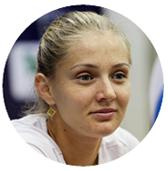

Центр генетического тестирования в Пермcком крае
Раскрой данные личности
заложенные природой!
Узнайте свой потенциал благодаря инновационной методике
биометрического тестирования
Ваши пальцы знают о вас всё!
-
ДугиПодробней!
-
ПетлиПодробней!
-
ЗавиткиПодробней!
Исследование построено на изучении рельефных узоров (папиллярных линий) на подушечках пальцев, которым занимается наука дерматоглифика.
Узоры закладываются во время внутри-утробного развития плода, остаются неизменными в течение всей жизни и отражают индивидуальную организацию нервной системы человека. Связь кожных узоров с индивидуальными особенностями нервной системы позволяет давать научно обоснованные оценки человеческого характера и поведения.
Как происходит тестирование?
-
определяются типы узоров
при помощи специального сканера
-
обрабатывается пальцевая
формула на сервере компании
-
генерируется персональный отчет
о природном потенциале клиента
Отчет содержит 17 страниц с графиками и описаниями:
-
Тип ваших узоров
По сочетанию типов узоров можно судить об особенностях функционирования всех систем организма
-
Тип образования
Данный показатель говорит о том? каое профильное образование вам подходит наилучшим образом, сочетая ваши потребности и возможности
-
Сферы и направления профессиональной деятельности
Направление профессиональной детельности важно определять в соответствии с индивидуальными личностными особенностями. В этом случае высока вероятность того, что работа будет приносить удовольствие и моральное удовлетворение
-
Спорт, игровое амплуа, рекомендованные виды спорта
Дерматоглифика давно используется в спортивной генетике - для отбора наиболее перспективных спортсменов или подбора наиболее подходящего для них вида спорта
-
Модель самореализации
Любой человек может брать на себя разные роли в зависимости от ситуации. Но для каждого из нас существует модель самореализации, которая позволяет достигать наибольших результатов и чувствовать себя наиболее комфортно
-
Здоровте, факторы риска
В результате многочисленных исследований российских ученых были установлены дерматоглифические признаки для многих соматических патологий. Присутствие данных признаков у вас на пальцах говорит не о наличии конкретного диагноза, а косвенно указывает на его возможное присутсвие в группе риска
-
Тип поведенческой адаптации
Знание о природных особенностях, сильных и слабых сторонах каждого из нас может очень помочь в повседневной жизни. Оно позволяет выявить наиболее подходящие, комфортные условия жизни, саморазвития и модель взаимодействия с окружающими
-
Потенциал нервной системы
Благодаря деятельности центральной нервной системы осуществляется как саморегуляция организма, так и его контакт с внешней средой. В функционировании разных сруктур нервной системы можно выделить общие закономерности, а также дифференцированные свойства
-
Темперамент
Неповторимость психики каждого человека связана с особенностями физиологического строения и развития организма, а также с различными внешними воздействиями социальной среды. Темперамент обусловлен типом нервной системы и отображает преимущественно врождённые характеристики поведения
-
Тип восприятия новизны
В данном разделе описывается, каким образом вы воспринимаете новую информацию
Кому будут полезны наши услуги?
-
Детским садам
Очень важно как можно раньше правильно определить потенциал ребенка и развивать его. Тестирование Genetic-test поможет педагогам выбрать наиболее подходящую учебную программу и в работе с каждым ребенком ориентироваться на его индивидуальые особенности и природные способности
-
Спортивным секциям
Очень важно как можно раньше правильно определить потенциал ребенка и развивать его. Тестирование Genetic-test поможет педагогам выбрать наиболее подходящую учебную программу и в работе с каждым ребенком ориентироваться на его индивидуальые особенности и природные способности
-
Центрам занятости населения
Биометрический отчет позволяет оказывать безработным гражданам психологическую поддержку и профориентационные консультации, а также подбирать наиболее подходящие вакансии, направлять на обучение, переподготовку и повышение квалификации, соответсвующие качествам кандидата
-
Школам
Genetic-test - эффективная методика для проведения мероприятий по профориентации, которая позволит предоставлять обширную информацию учащимся и их родителям. Результаты будут интересны не только школьникам, но и педагогам для выбора подходящей учебной программы и методик, в формировании классов и секций, помощи детям в адаптации в обществе
-
Организациям
Genetic-test - поможет узнать индивидуальные особенности ваших сотрудников и оптимально выстроить межличностные отношения в коллективе, поможет определить круг обязонностей для каждого из сотрудников, а также узнать, каких людей следует объеденить в команды для максимального результата в той или иной деятельности
-
Вузам
Благодаря тестированию Genetic-test высшие учебные заведения помогают абитуриентам в выборе будущей профессии. Таким образом, вуз получает успешных студентов, с удовольствием занимающихся выбранным направлением и становящихся специалистами своего дела
-
Психологам
Методика биометрического тестирования Genetic-test успешно используется многими психологами, как быстрая первичная оценка клиента. Отчет служит отправной точной для дальнейшей консультации, содержит информацию для самоопределения и эффективного развития личностии, на основе которой можно рекомендовать тренинги
-
Для родителей
Любой родитель задается вопросами - как понять и правильно воспитать своего ребенка, на какой жизненный путь его следует направить, чтобы он получал удовольствие от того, чем будет заниматься, и достигал навысшего успеха. Genetic-test не только поможет, сочетая природные способности вашего ребенка с его интересам, выбрать самый подходящий вид спорта, профессию и хобби, но и определить, на кого из родителей он больше походит и как найти с ним общий язык
-
Для абитуриентов
Выбор будущей профессии начинается с выбора образования. Принимая это важное решение, стоит учитывать свои интересы, склонности и способности. Отчет Genetic-test поможет совершить выбор специальности осознанно и в соответсвии с природным потенциалом, который в дальнейшем поможет учиться с желанием и удовольствием
-
Для детей
Узнавание и понимание своих способностей и талантов - важный этам в процессе самопознания. Отчет Genetic-test наглядно описывает различные особенности человека - от типа нервной системы до профессионального потенциала. Эта информация поможет вам наилучшим способом адаптироваться среди сверстников и эффективно и осознанно развиваться
-
Для студентов и выпускников вузов
Выбирая место работы, оценивайте его не только с материальной точки зрения, но и с позиции развития и морального удовлетворения. Разделы «Модель самореализации», «Направления и сферы профессиональной деятельности» в отчете Genetic-test помогут вам в выборе карьеры
-
Для тех, кто ищет работу
Мы проводим на работе значительную часть своей жизни, и важно эффективно проводить это время, чтобы потом оно не казалось потерянным зря. Знание своих сильных и слабых сторон поможет вам с самоопределением и поиском наиболее подходящей професси или смены старой
Используйте свои сильные стороны!
Это лучшая стратегия, чтобы преуспечь в жизни!
-
Александр Гордонроссийский радио- и телеведущий
Я имел возможность познакомиться с огромным количеством разработок, поэтому могу говорить о том, что Genetic-test - это тот редкий случай, когда научная составляющая и практическая ценность услуги на одинаково достойном уровне
-
Леонид Парфеновжурналист, телеведущий, режиссер
Опираясь на статистические данные Genetic-test «направление профессиональной деятельности», можно сделать выводы и предположения сможет ли кандидат справиться с работой и подходит ли она ему
-
Дмитрий Дибровроссийский журналист, телеведущий
Такое «совпадение» результатов с моей личностью - мистика какая-то. Высокие показатели склонности к аналитике, высокие коммуникативные навыки - это все, несомненно, обо мне
-
Вадерия Кудрявцевателеведущая актриса, танцовщица
Раньше, я даже не знала, что есть какие-либо тесты, кроме психологических, которые могут о тебе что-то рассказать. Отчет меня невероятно поразил! Рекомендую всем попробовать Genetic-test
-
Анна Чакветадзероссийская теннисистка
Класс! Спасибо большое. Идея очень хорошая. Тест полезен особенно для людей, которые не знают себя, стараются найти ответы на какие-то вопросы, свой путь
-
Дмитрий Губерниевроссийский спортивный комменатор
Спорт и коммуникации - вот, что действительно меня характеризует, и что было подробно описано в отчете Genetic-test! Вот если бы каждый прошел такой тест, а потом занимался бы своим делом, разве не в идеальном мире мы бы жили?
Мы поможем вам услышать голос своих генов!
- - Мы протестировали сотни людей разных возрастных групп.
- - Интерпретацию отчета проводит специалист в области педагогики и психологии.
- - Мы организуем тестирование в любом формате: личное, семейное, групповое.
- - Наш специалист готов приехать в нужное вам место в удобное для вас время.
- - Вы получаете качественно отпечатанный, цветной отчет.

Год назад сделали тест дочери, очень понравилось. Потом супруга прошла тест, начали сверять, сравнивать. Открыли для себя много интересного. Пришли к выводу, что для полной картины нужно еще и папе пройти этот тест. Наконец выбрались, получили результат. Он нас удивил - настолько все похоже на правду, что даже не верится, что такое возможно. Мы все разные, но отчеты каждого настолько точно именно про нас... Большое спасибо за такую возможность посмотреть на себя и своих близких "со стороны". И спасибо специалисту, который объяснил результаты тестов, как их использовать.
Очень нужный тест, который поможет правильно с оирентироваться по жизни, найти себя и определить какие качества нужно развивать. Узнать свои сильные стороны и применить их. Детям надо делать всем 100%, чтобы не терять время на то, что скорее всего не принесет успеха.
Хотелось бы сказать огромное спасибо Вам! Очень интересно было узнать про мою дочь, перед тем как отправить ее в какой-либо кружок. Сама прошла тест и была очень удивлена, почти по всем пунктам у меня совпадения... Еще раз огромное спасибо!!! Очень советую всем и причем в любом возрасте)))